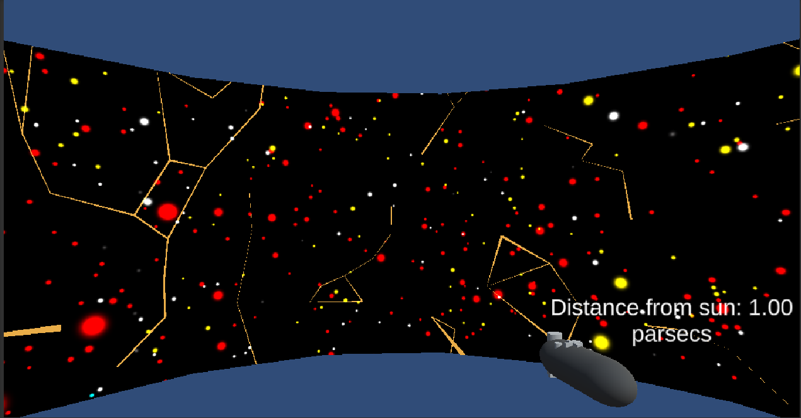

CS528 Project: Shining Star
By Nishant Desai

Github link to project files
Instrtuctions to run the project:
- Click on the github link provided above.
- Download the project on your machine and unzip it.
- Download and install Unity hub
- In Unity hub go to 'Installs' -> 'Official releases' -> archives and select Unity 2019.X - 2019.2.11 as unity hub link.
- Open the project from Unity hub.
- In the Assests folder, go to 'module-omicron' -> 'CAVE2' -> 'Scenes' -> 'Cube world example' and drag and drop it into the heirarchy.
- Delete the default scene.
- Press the play button at the top.
How to use the application:
- Use WASD to move the CAVE through the virtual space
- QE to turn the CAVE within the virtual space
- RF to raise and lower the CAVE within the virtual space
- IJKL to move the user within the CAVE (and even out of the CAVE if you move too far)
- U and O to rotate the user within the CAVE
- In the CAVE environment use-
- Joystick to move the CAVE through the virtual space OR navigate through the menu items
- L2 + joystick to rotate the CAVE within the virtual space
- X to go back OR cancel
- O to bring up menu OR select any menu items
Link to youtube video
What can I do with this?
How to get the data
Some interesting things when working on it
Important optimizations